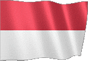

GUIDA AL GIOCO v3
Seleziona la lingua della guida del gioco.





GAMEPLAY GENERALE
● Lo scopo del gioco è conquistare il mondo intero effettuando operazioni di terra o utilizzando l'agenzia segreta.
● Puoi utilizzare le opzioni relative all'economia, alla sicurezza e alla gestione del paese nella schermata di gioco.
● Per passare al giorno successivo, devi utilizzare la freccia in basso a destra nella schermata di gioco.
● Il reddito giornaliero e la popolazione giornaliera vengono aggiunti a tutti gli stati nelle transizioni giornaliere.
● Quando la giornata è finita, altri stati potrebbero fare offerte al tuo paese o potrebbero verificarsi eventi mondiali casuali.
● Le decisioni che prendi su offerte e situazioni possono influenzare la tua economia, la popolazione e le relazioni con altri governi.
ECONOMIA
● Puoi guadagnare denaro investendo nel tuo paese.
● Puoi guadagnare denaro scegliendo un'aliquota fiscale.
● Puoi guadagnare denaro elaborando le risorse minerarie trovate.
● Puoi fare investimenti inviando i tuoi uomini d'affari in altri paesi.
● Guadagni entrate giornaliere da istituzioni pubbliche.
● La ricerca di fabbrica e industria ti fa guadagnare entrate extra.
● Guadagni soldi extra da ogni turista che viene nel tuo paese.
● Puoi sostenere la tua economia concedendo prestiti.
● Se conquisti paesi, vincerai un primo premio unico.
● Ti viene aggiunto il 100% del reddito giornaliero dei paesi che occupi.
● (Puoi controllarlo dalla sezione Statistiche - Processi di conquista.)
● Puoi guadagnare denaro eseguendo operazioni dalla sezione Homeland Security.
● Puoi guadagnare denaro eseguendo attacchi informatici su altri paesi.
● Puoi guadagnare denaro dichiarando una Mobilitazione Nazionale.
● Puoi guadagnare usando i tuoi servizi segreti.
CENTRO OPERATIVO
● Puoi invadere paesi con operazioni di terra.
● Se hai successo nella campagna terrestre, guadagnerai punti di cattura.
● Se il punto di invasione raggiunge il 100%, il paese sarà conquistato.
● Puoi indebolire l'esercito del paese nemico con attacchi aerei.
● Puoi effettuare attacchi informatici su altri paesi.
● Puoi utilizzare le opzioni extra attivando l'edificio del consolato.
● Puoi ottenere rapporti militari, economici e dettagliati posizionando spie nei paesi.
● Puoi fare accordi di amicizia con i paesi con cui sei in guerra.
● Puoi eseguire tutti gli attacchi con le autorizzazioni.
● Puoi applicare l'embargo ai paesi.
PRODUZIONE DOMESTICA
● Puoi produrre il prodotto che desideri dalla sezione produzione.
● Devi inviare richieste commerciali a paesi per vendere i tuoi prodotti.
● Puoi negoziare i prezzi sui prodotti che altri paesi vogliono acquistare.
● Solo i paesi amici vogliono acquistare prodotti da te.
● Più varietà di prodotti hai, più è probabile che tu faccia trading.
● Migliorando le tue relazioni commerciali con altri paesi, puoi aumentare i prezzi delle tue offerte.
SICUREZZA PERSONALE
● I paesi con cui sei in guerra possono assassinarti.
● Dovresti considerare il rapporto del consulente.
● Per proteggerti dagli omicidi, dovresti nominare un consulente altamente protettivo.
● È inoltre necessario aggiornare i pacchetti di supporto.
ORGANIZZAZIONE SEGRETA
● Puoi iniziare rivolte in altri paesi istituendo il servizio segreto.
● Puoi assassinare con i servizi segreti.
● È possibile utilizzare solo personale addestrato nelle operazioni.
● Il tuo personale addestrato e le tue armi aumenteranno la tua forza operativa.
ASSEMBLEA ed ELEZIONI
● Le elezioni si tengono ogni 365 giorni.
● Devi ottenere il maggior numero di voti per vincere le elezioni.
● Se hai successo nelle scelte fatte, guadagnerai denaro extra.
● Fare leggi, raduni, distribuire denaro, intervistare per ottenere voti.
● Se perdi le elezioni devi intervenire entro 8 giorni.
● Se l'intervento militare fallisce, il gioco finisce.
(PREMIUM) ALLEANZE GLOBALI
● Puoi formare la tua alleanza o entrare in alleanze esistenti.
● Puoi tenere riunioni con stati alleati.
● Puoi guadagnare denaro completando le richieste degli stati alleati.
● La ricerca dell'Alleanza attiva opzioni extra.
● Puoi rafforzare la tua difesa usando le produzioni dell'alleanza.
● Puoi condurre operazioni congiunte con stati alleati.
● Se attacchi gli stati membri della stessa alleanza, puoi essere espulso dall'alleanza.
(PREMIUM) NAZIONI UNITE
● Puoi votare 5 diverse risoluzioni usando le Nazioni Unite.
● Possono essere prese decisioni di sostegno finanziario o sanzioni economiche per altri paesi.
● Non è possibile prendere nuove decisioni finché le decisioni attive non sono terminate.
● Solo i paesi non conquistati votano nelle decisioni.
(PREMIUM) INDUSTRIA PESANTE
● 5 diverse armi e attrezzature personalizzate possono essere prodotte con l'industria pesante.
● Solo i paesi amici con richieste commerciali possono inviarti una richiesta commerciale.
● Le armi prodotte non possono essere utilizzate nelle battaglie.
VINCI E PERDE
● Se conquisti tutti i paesi al 100%, vinci la partita.
● Se il tuo denaro è inferiore a -20.000.000, il gioco è finito.
● Se la felicità è inferiore a 0, il gioco è finito.
DI
● Puoi condividere con noi il contenuto che desideri aggiungere e i tuoi suggerimenti.
● Puoi contattarci per posta dalla pagina relativa al gioco.
● Saremo felici se segnerete il nostro gioco.
● giochi buoni.